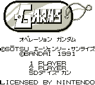
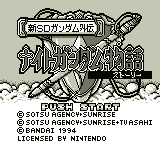

Gundam - Gameboy Games

- Company: Bandai
- Date Released: 18 May 1991
- Price (in yen): 3500
- Genre: Platform game
Controls
- A button: Use Knife
- B button: Shoot
- Start: Pause
- Select: [not used]
From Phillip Yee:
GARMS is more or less a game to promote Bandai's Gundam variation Model series of the same name.
![[SD Gundam Kunitori]](images/gbKunitori.gif)

Controls
- A button: Open Chests
- B button: Use Shield/Weapon(?)
- Start: Item Inventory
- Select: [not used]
Anime Video Game Resource Center © 1998 by Luis A. Cruz